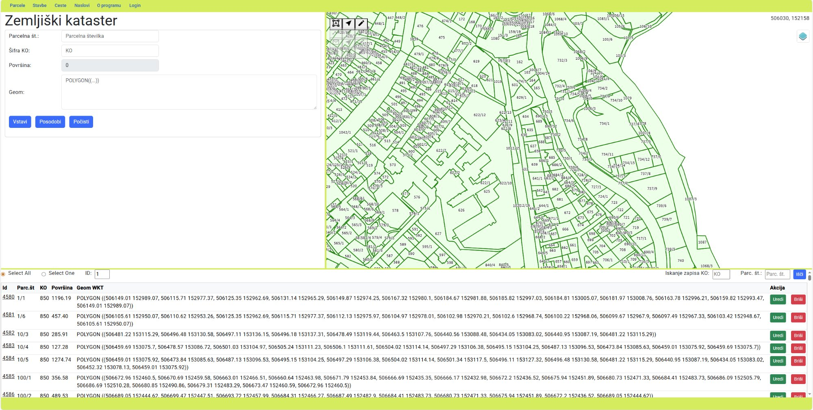
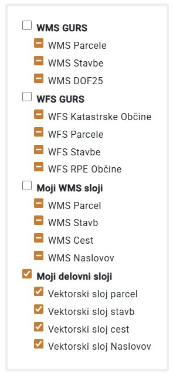
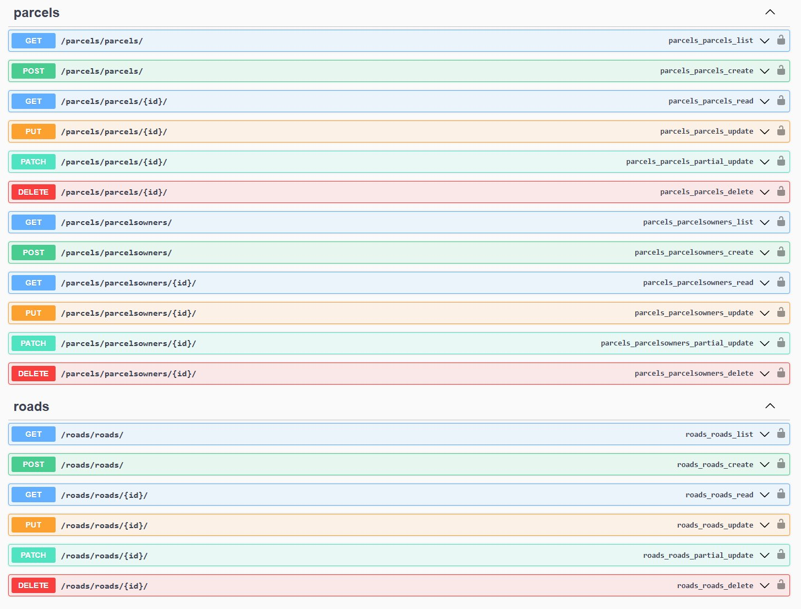

Dobrodošli v aplikaciji GeoSG
Ta aplikacija omogoča upravljanje, vizualizacijo in urejanje prostorskih podatkov katastrskih parcel, stavb, cest in naslovov. Aplikacija je namenjena strokovnjakom za delo z geodetskimi in GIS podatki.
Sistemske zahteve
- Sodoben spletni brskalnik (Chrome, Firefox, Edge, Safari)
- Minimalna ločljivost zaslona: 1280x720 px
- Internetna povezava za nalaganje podlag in WMS/WFS slojev
- Prijavni račun z ustreznimi pravicami
Osnove uporabe aplikacije
Vmesnik aplikacije
Aplikacija je razdeljena na tri glavne dele:
Zgornja vrstica z jezički
Parcele | Stavbe | Ceste | Naslovi | O programu | Login
S klikom na jezička preklapljate med različnimi moduli. Vsak modul prikaže ustrezno tabelo in obrazec.
Leva plošča (Tabela + Obrazec)
Zgornji del prikazuje tabelo z zapisi, spodnji del pa obrazec za vnos/urejanje. Velikost lahko prilagodite z vlečenjem vmesnega ločila.
Desna plošča (Zemljevid)
Interaktivni OpenLayers zemljevid s kontrolami za sloje, zoom in risanje/urejanje geometrije.
Navigacija po slojih
Na karti najdete gumb "Sloji" (zgoraj desno), ki odpre seznam razpoložljivih slojev:
- Podlage: OSM, Ortofoto (GURS), Google satelit, Google hybrid
- WFS GURS: Katastrske občine, Parcele, Stavbe, Občine (vektorski sloji)
- Moji WMS sloji: Parcele, Stavbe, Ceste, Naslovi iz GeoServerja
- Moji delovni sloji: Parcele, Stavbe, Ceste, Naslovi iz PostgreSQL baze (vektorski)
Osnovni kontroli
| Funkcija | Opis | Lokacija |
|---|---|---|
| Zoom +/− | Približaj/oddalji pogled | Desno na karti ali kolešček miške |
| Pan (premik) | Premakni pogled po karti | Vleci z miško po karti |
| Sloji | Vklopi/izklopi posamezne sloje | Gumb "Sloji" zgoraj desno |
| Uredi | Editiraj obstoječo geometrijo | Ikone na modulu (zgoraj desno na karti) |
WMS in WFS sloji
GeoSG omogoča prikaz različnih tipov geografskih slojev iz več virov. Sloje upravljate preko kontrole "Sloji" v zgornjem desnem kotu karte.
Tipi slojev
WMS GURS (Web Map Service)
Kaj so WMS sloji: WMS (Web Map Service) je OGC standard za prikaz kartografskih slik preko spleta. Sloji se prikazujejo kot rastrske slike (PNG/JPEG).
- WMS Parcele: Katastrske parcele iz GURS servisa
- WMS Stavbe: Stavbe iz GURS servisa
- WMS DOF25: Digitalni ortofoto v ločljivosti 25 cm/piksel
WFS GURS (Web Feature Service)
Kaj so WFS sloji: WFS (Web Feature Service) je OGC standard za prenos vektorskih podatkov preko spleta. Prenese se celotna geometrija in atributi.
- WFS Katastrske Občine: Meje katastrskih občin (poligoni)
- WFS Parcele: Parcele z atributi (številka, površina, KO…)
- WFS Stavbe: Stavbe z atributi
- WFS RPE Občine: Meje občin iz registra prostorskih enot
Moji WMS sloji (GeoServer)
Lastni WMS sloji: To so sloji, ki jih servira vaš GeoServer iz vaše PostgreSQL/PostGIS baze.
- WMS Parcel: Vaše parcele (iz vaše baze)
- WMS Stavb: Vaše stavbe
- WMS Cest: Vaše ceste
- WMS Naslovov: Vaši naslovi
Ti sloji se uporabljajo za hitrejši prikaz vaših podatkov brez prenosa celotne geometrije.
Moji delovni sloji (Vektorski)
Vektorski sloji iz baze: To so sloji, ki se naložijo direktno iz PostgreSQL/PostGIS baze kot vektorski podatki (GeoJSON format).
- Vektorski sloj parcel: Omogoča selekcijo in editiranje
- Vektorski sloj stavb: Omogoča selekcijo in editiranje
- Vektorski sloj cest: Omogoča selekcijo in editiranje
- Vektorski sloj Naslovov: Omogoča selekcijo in editiranje
Kako uporabljati kontrolo slojev
Odpri kontrolo
Na karti (desna plošča) poiščite gumb "Sloji" v zgornjem desnem kotu. Kliknite nanj za odpiranje menija slojev.
Vklopi/izklopi sloje
Kliknite na checkbox poleg imena sloja ali skupine slojev:
- Označen checkbox (✓): Sloj je viden na karti
- Neoznačen checkbox (☐): Sloj je skrit
Upravljanje skupin
Sloji so organizirani v skupine. Če kliknete na checkbox skupine, vklopite/izklopite VSE sloje v tej skupini naenkrat.
Primerjava WMS vs WFS vs Vektorski sloji
| Lastnost | WMS (rastrski) | WFS (vektorski) | Delovni vektorski |
|---|---|---|---|
| Format prenosa | PNG/JPEG slika | GML/GeoJSON geometrija | GeoJSON geometrija |
| Hitrost | 🟢 Zelo hiter | 🔴 Počasen (veliko podatkov) | 🟡 Srednje hiter |
| Selekcija objektov | ❌ Ne | ✅ Da | ✅ Da |
| Editiranje | ❌ Ne | ❌ Ne (samo ogled) | ✅ Da |
| Prikaže atribute | ❌ Ne | ✅ Da | ✅ Da |
| Uporaba | Referenčni prikaz | Kontrola GURS podatkov | Aktivno delo z bazo |
Priporočena kombinacija slojev
- Podlaga: OSM ali Google satelit (za orientacijo)
- WMS GURS: WMS Parcele ali WMS DOF25 (za referenčni prikaz katastra)
- Moji delovni sloji: Vključite VSE vektorske sloje (za selekcijo in editiranje)
- WFS GURS: Izklopite (razen za kontrolo manjših območij)
- Če se aplikacija upočasni, najprej izklopite WFS GURS sloje
- Na počasni povezavi uporabljajte samo WMS sloje za referenčni prikaz
- Za editiranje morate imeti vklopljen vsaj en vektorski delovni sloj
Vrstni red slojev
Sloji se prikazujejo v naslednjem vrstnem redu (od spodaj navzgor):
- Podlaga (OSM, Google satelit…) – najspodaj
- WMS GURS (referenčni sloji GURS)
- WFS GURS (vektorski sloji GURS)
- Moji WMS sloji (iz GeoServerja)
- Moji vektorski sloji (iz baze)
- Highlight sloj (označeni objekti - magenta obroba) – na vrhu
Delo s parcelami
Prikaz parcel v tabeli
Preklopite na jezičko "Parcele"
V tabeli se prikažejo vse parcele iz baze (stolpci: ID, Parc. št., KO, Površina).
Izbira načina prikaza
Nad tabelo sta dva radijska gumba:
- Select All: Prikaže vse parcele
- Select One: Prikaže samo parcelo z določenim ID (vnesite ID v polje)
Dodajanje nove parcele
Nariši geometrijo na karti
Na desni plošči (zemljevid) kliknite ikono "Riši parcelo" (poligon). Nariši poligon s kliki na karto. Dvojni klik zaključi risanje.
Izpolni obrazec
WKT geometrija se samodejno prenese v obrazec (polje "Geom"). Izpolnite še:
- Parcelna številka (parc_st): npr. "1234/5"
- Šifra KO (sifko): npr. "850"
- Površina (area): npr. "1500"
Shrani parcelo
Kliknite gumb Vstavi. Čeimate ustrezne pravice, se parcela shrani v bazo in prikaže v tabeli.
Urejanje obstoječe parcele
Izberi parcelo
V tabeli kliknite Uredi ob parceli, ki jo želite spremeniti. Podatki se naložijo v obrazec.
Uredi atribute ali geometrijo
Atributi: Spremenite vrednosti v obrazcu.
Geometrija: Kliknite ikono "Uredi parcelo" na karti, povlecite oglišča. Ko končate, kliknite ponovno isto ikono (se ugasne). WKT se posodobi.
Shrani spremembe
Kliknite Posodobi. Parcela se posodobi v bazi.
Brisanje parcele
V tabeli kliknite Briši ob parceli. Potrditvenemu dialoga potrdite brisanje.
Delo s stavbami
Delo s stavbami je analogno delu s parcelami. Edina razlika je v podatkovnem modelu.
Atributi stavbe
- ID: Enoličen identifikator (generira baza)
- Šifra KO (sifko): Katastrska občina (npr. "850")
- Številka stavbe (st_stavbe): npr. "1234"
- Opis (description): Kratek opis stavbe
- Površina (area): Površina tlorisa stavbe (m²)
- Geometrija (geom_wkt): Poligon stavbe v WKT formatu
Postopek dela
Preklopite na jezičko "Stavbe"
Nariši poligon stavbe
Ikona "Riši stavbo" na zemljevidu. Narišite poligon, dvojni klik zaključi.
Izpolni obrazec in shrani
WKT se avtomatsko vnese. Dodajte ostale atribute in kliknite Vstavi.
Urejanje in brisanje
Enako kot pri parcelah:
- Uredi: Klik na Uredi → Spremeni atribute ali geometrijo → Posodobi
- Briši: Klik na Briši → Potrdi
Delo s cestami
Atributi ceste
- ID: Enoličen identifikator
- Ime ulice (str_name): npr. "Dunajska cesta"
- Administrator: Upravljavec ceste
- Vzdrževalec (maintainer): Kdo vzdržuje cesto
- Dolžina (length): Dolžina ceste v metrih
- Geometrija (geom_wkt): LineString (linija) v WKT formatu
Filter po imenu ulice
Vnesite ime ulice
Nad tabelo je vnosno polje "Filter po imenu ulice". Vnesite del imena (npr. "Dunaj").
Kliknite "Išči"
Tabela se filtrira in prikaže samo ceste z ujemajočim imenom. Tudi karta se osveži s filtriranimi cestami.
Počisti filter
Gumb "Počisti filter" odstrani filter in prikaže vse ceste.
Urejanje geometrije ceste
Enako kot pri parcelah, vendar urejate linijo (dodajate/pomikate vozlišča), ne poligon.
Delo z naslovi
Atributi naslova
- ID: Enoličen identifikator
- Številka stavbe (building_num): Šifra stavbe
- Ulica (street): Ime ulice
- Hišna številka (house_num): npr. "25A"
- Poštna številka (post_num): npr. "1000"
- Pošta (post_name): npr. "Ljubljana"
- Geometrija (geom_wkt): Point (točka) v WKT formatu
Dodajanje naslova
Nariši točko
Ikona "Riši naslov" → Klik na karto → WKT se avtomatsko vnese v obrazec.
Izpolni podatke o naslovu
Vnesite ulico, hišno številko, poštno številko in ostale atribute.
Shrani
Kliknite Vstavi.
Filter po ulici
Enako kot pri cestah – vnesite ime ulice v filter, kliknite "Išči". Prikaže se samo naslove z ujemajočim imenom ulice.
Napredne funkcije
Izvoz podatkov v GeoPackage
Aplikacija omogoča izvoz VSEH podatkov (parcele, stavbe, ceste, naslovi) v GeoPackage format (.gpkg).
Pritisnite tipkovno bližnjico
Pritisnite Alt + Shift + E na tipkovnici.
Prenos datoteke
Brskalnik bo samodejno prenesel datoteko podatki.gpkg v mapo za prenose. Datoteko lahko odprete v QGIS ali drugih GIS orodjih.
Prilagajanje panelov
Velikost panelov lahko prilagodite:
- Horizontalno: Vlecite ločnico med levo (tabela/obrazec) in desno (karta) ploščo.
- Vertikalno: Vlecite ločnico med zgornjo (tabela) in spodnjo (obrazec) ploščo.
Selekcija objekta na karti
Kliknite ikono "Izberi" na modulu
Npr. za parcele kliknite ikono "Izberi parcelo" (kazalec miške).
Kliknite na objekt na karti
Objekt se označi (magenta obroba), podatki se naložijo v obrazec in tabela se samodejno pozicionira na izbran zapis.
Upravljanje slojev
Kliknite gumb "Sloji" zgoraj desno na karti. Označite/odznačite sloje za prikaz:
- Podlage: OSM, Ortofoto, Google
- WFS GURS: Podatki iz GURS servisa (parcele, stavbe, KO, občine)
- Moji WMS sloji: Podatki iz GeoServerja (WMS format)
- Moji delovni sloji: Podatki iz PostgreSQL baze (vektorski sloji)
Statusna vrstica
Na dnu aplikacije se nahaja rumena statusna vrstica, ki prikazuje trenutno stanje aplikacije:

| Sporočilo | Pomen |
|---|---|
| "Zbirka je med prenosom" | Podatki se nalagajo iz baze ali GeoServerja |
| "Parcela uspešno shranjena" | CRUD operacija je bila uspešna |
| "Nimate pravic za urejanje" | Niste prijavljeni ali niste v skupini 'editors'/'admin' |
| "Prijavljen: [ime] (editors)" | Prikaže vaše uporabniško ime in skupino po prijavi |
| "Napaka pri shranjevanju" | Prišlo je do napake (preverite konzolo brskalnika) |
Swagger API dokumentacija
Aplikacija uporablja Django REST Framework za backend API. Vsi API endpoints so dokumentirani v Swagger vmesniku:
Dostop do Swagger vmesnika
V brskalniku odprite: http://[naslov-strežnika]/swagger/
Razpoložljivi API endpoints
Parcels:
- GET
/parcels/parcels/- Seznam vseh parcel - POST
/parcels/parcels_view/insert2/- Vnos nove parcele - PUT
/parcels/parcels_view/update/{id}/- Posodobitev parcele - DELETE
/parcels/parcels/{id}/- Brisanje parcele
Buildings, Roads, Addresses: Enaka struktura kot Parcels
Testiranje API v Swagger
V Swagger vmesniku lahko direktno testirate vse API klice:
- Kliknite na endpoint (npr. GET /parcels/parcels/)
- Kliknite "Try it out"
- Izpolnite parametre (če so potrebni)
- Kliknite "Execute"
- Vidite Response body (JSON) in Status code
Avtentikacija in pravice
Aplikacija podpira Django avtentikacijo z različnimi nivoji pravic:
| Skupina | Pravice |
|---|---|
| admin | Polne pravice (vnos, urejanje, brisanje vseh podatkov) |
| editors | Vnos, urejanje in brisanje podatkov |
| viewers | Samo branje podatkov (brez urejanja) |
| Brez prijave | Omejen dostop (samo branje) |
Pogosta vprašanja (FAQ)
❓ Kako lahko spremenim geometrijo obstoječe parcele?
V tabeli kliknite Uredi, nato na karti kliknite ikono "Uredi parcelo". Povlecite oglišča na novo pozicijo. Ko končate, ponovno kliknite ikono (se ugasne). WKT v obrazcu se posodobi. Kliknite Posodobi.
❓ Zakaj se mi ne prikaže gumb "Vstavi" ali "Briši"?
Nimate ustreznih pravic. Preverite, ali ste prijavljeni in ali ste član skupine 'editors' ali 'admin'. Kontaktirajte administratorja za dodelitev pravic.
❓ Kako izvozim podatke v QGIS?
Pritisnite Alt + Shift + E za izvoz GeoPackage (.gpkg) datoteke. V QGIS-u uporabite Layer → Add Layer → Add Vector Layer in izberite preneseno datoteko.
❓ Zakaj se karta počasi nalaga?
Verjetno imate vklopljene WFS sloje GURS, ki nalagajo veliko podatkov. Izklopite WFS sloje v kontroli "Sloji" zgoraj desno na karti.
❓ Kako lahko resetiram obrazec?
Kliknite gumb Počisti v obrazcu. Vsa polja se resetirajo na prazne vrednosti.
❓ Kaj pomeni "POLYGON(...)" v polju Geom?
To je WKT (Well-Known Text) format za zapis geometrije. Aplikacija samodejno pretvori geometrijo iz karte v WKT format. Ne spreminjajte tega polja ročno, razen če ste prepričani v pravilnost WKT sintakse.
❓ Kako lahko najdem parcelo po KO in parcelni številki?
Nad tabelo parcel vnesite Šifra KO in Parc. št. v ustrezni polji, nato kliknite Išči. Tabela se samodejno pozicionira na najdeno parcelo.
❓ Ali lahko narišem več objektov hkrati?
Ne. Vsakič, ko narišete objekt, se WKT prenese v obrazec in morate shraniti objekt, preden nadaljujete z risanjem naslednjega.
❓ Kako spremenimo koordinatni sistem?
Aplikacija uporablja koordinatni sistem EPSG:3794 (Slovenska projekcija). Sprememba projekcije ni mogoča v vmesniku – potrebna je prilagoditev kode.
❓ Kje lahko vidim, ali je operacija uspela?
Poglejte rumeno statusno vrstico na dnu zaslona. Tam se prikaže sporočilo o uspehu ("Parcela uspešno shranjena") ali napaki ("Napaka pri shranjevanju").
❓ Kako lahko direktno testiram API brez uporabniškega vmesnika?
Odprite Swagger vmesnik na naslovu http://[strežnik]/swagger/. Tam lahko testirate vse GET/POST/PUT/DELETE operacije direktno v brskalniku.
❓ Zakaj mi statusna vrstica prikazuje "Zbirka je med prenosom" zelo dolgo?
Verjetno nalagate veliko podatkov (npr. vsi WFS sloji GURS). Izklopite nepotrebne sloje ali preklopite na manjše območje. Če težava vztraja, preverite mrežno povezavo.
❓ Kako lahko prijavim napako ali predlagam izboljšavo?
Kontaktirajte razvijalca ali IT podporo na vaši organizaciji. Opišite težavo, priložite posnetke zaslona in korak-za-korakom postopek za reproduciranje težave.